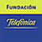

[ Net.Art proyect ]
In conjunction with the exhibition:
The Factory is a project by Marisa Gonzalez for the
Foundation Telefonica, and whose presentation is within the PHOTO SPAIN
FESTIVAL 2000. Beneath this exhibition's argument there is a real factory,
a historical building, characteristic in the regional industrial revolution
in which it's inserted, and which, when ending its century-long existence
has been deprived of its function, for the anachronism of its installations
and machinery. The closeness of the demolishment and the vision of the
interiors and exteriors has given the argument for this exhibition. Reciprocally,
the register of the photographic eye and the video camera's holds in the
fractionated destruction, the slow disappearance of a manual time which
forces the recognition of the territory and the landscape. Its dislocation
through the horizontal "unfolding" technique destroys the limit in the
sequence, constitutes the justification of this industrial archeology,
determinant in the procesual character of the presented work. The project
is thus resolved in an acting which is consequent with the reciprocal
appropriation and transformation which precipitate a new tale with the
help of the instrument handed over by the new technologies. The recycling
continues, nevertheless, to be the preliminary procedure which comes before
any new configuration or intervention, boosting a global comprehension
of the unity of her work.
As the catalogue of the exhibition, is made up of seven
parts, division which doesn't only correspond to the seven sections over
which the information contained has been organized and distributed, but
also to the seven silos which make up the factory building's structure.
The number "7" is reproduced in all the classifications wishing to emphasize
the symbolic character of the seven silos, and their protagonism in this
project's origin.
The design is based on this element, and on the apotheosis
of the fall, which is the decisive event. The content's inventory also
brings us back to this number. A 3 screen fragment in monocanal of the
video installation is included in the destruction section.
The task in this web site is to to open an interactive strategy of participation
and communication on line. Send images and texts of relevant factories on
a certain industrial arquitecture in process of destruction or abandoned,
related to your own experience, in your neighborhood, family or any other
kind. A computer will be open in the exhibition gallery, to receive information
from all the interested parties who want to be involved in the project. All
participants will be included in this project and could be visited in the
web page.
[ see the call
]
CALENDAR:
2000
May,
June, July
Temporary Exhibition Halls of Telefonica Foundation.
C. Fuencarral 1. 28004 Madrid. Spain
2000
September
Seminario Internacional de Arquitectura Industrial.
Depósito de Aguas, Vitoria.
[
continuará la itinerancia
]
<web>
Marisa González:
Funding by |
 |
| net.art design | |